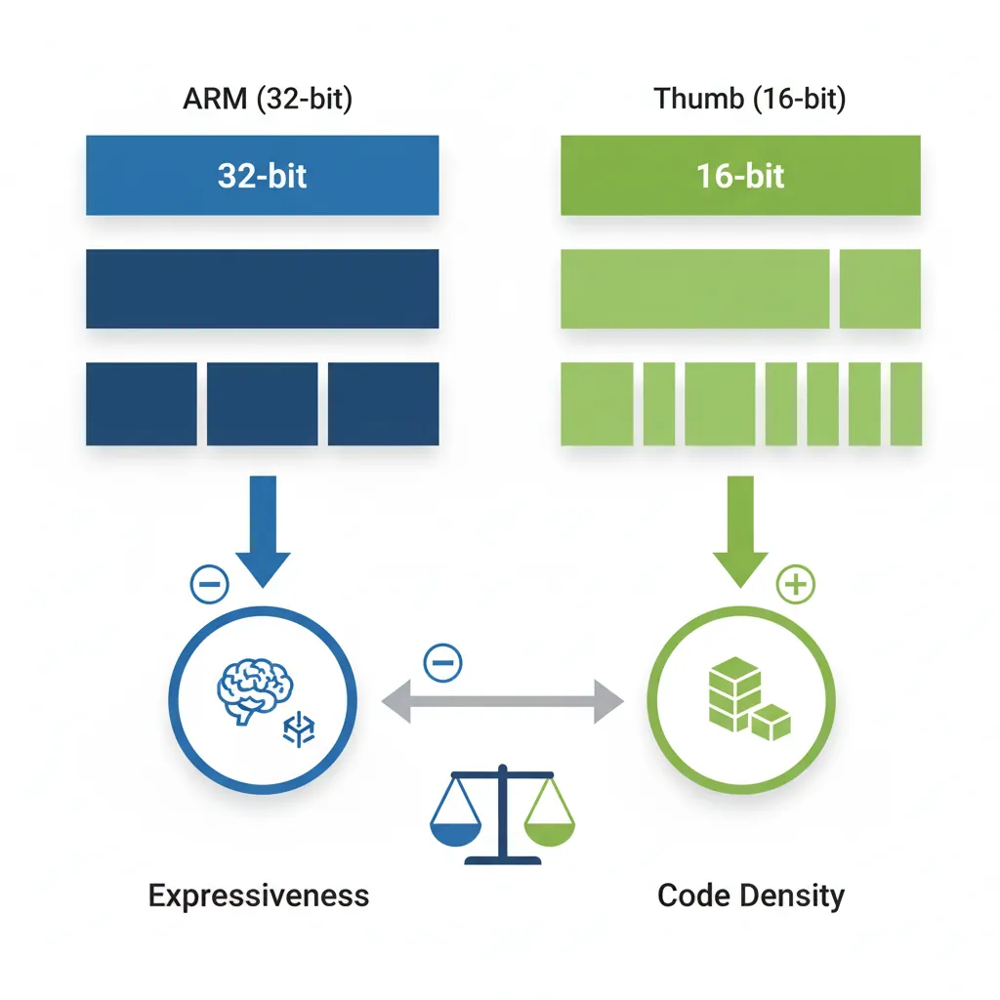
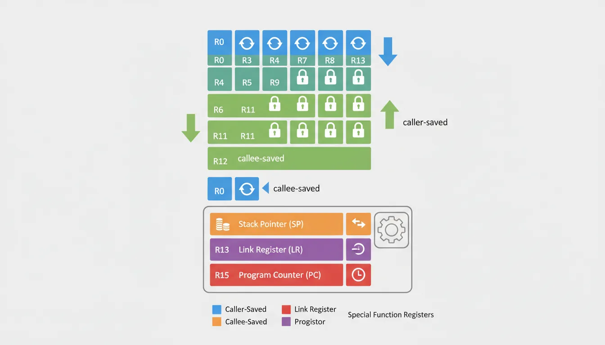
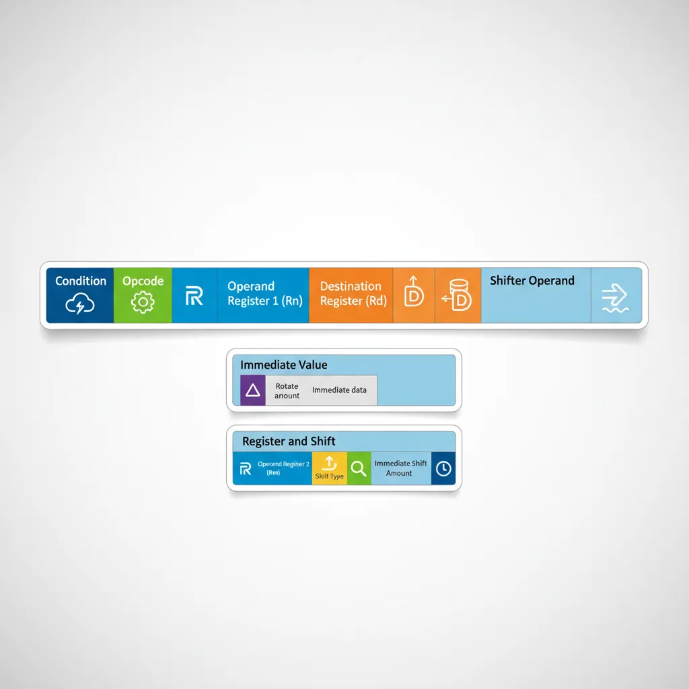
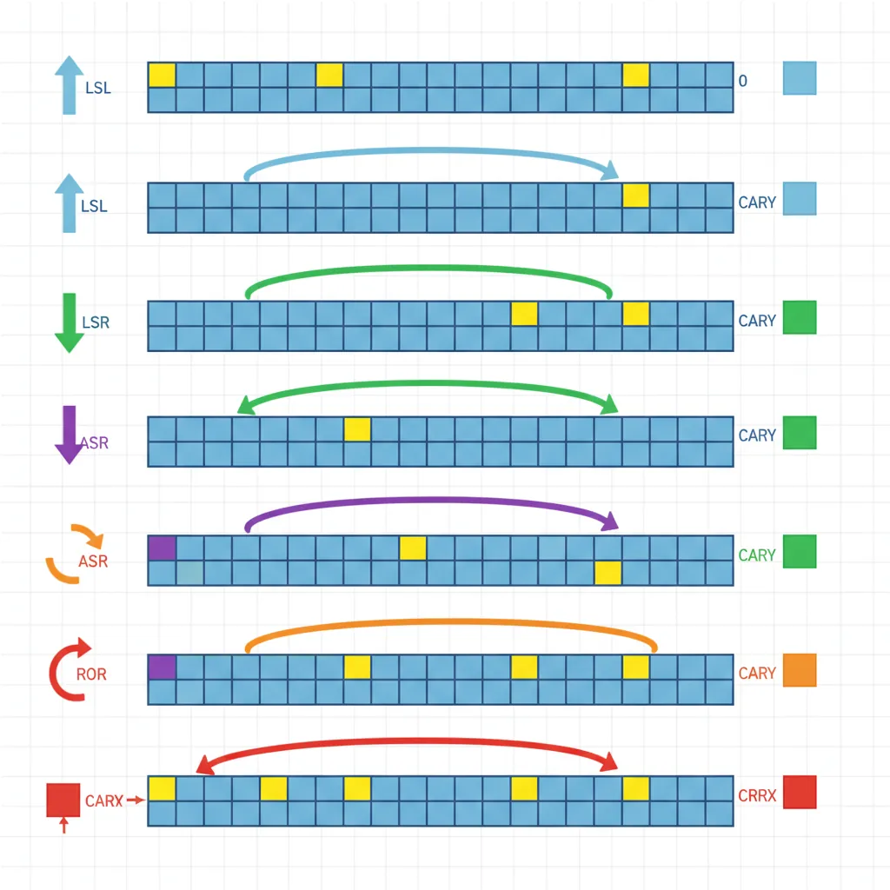
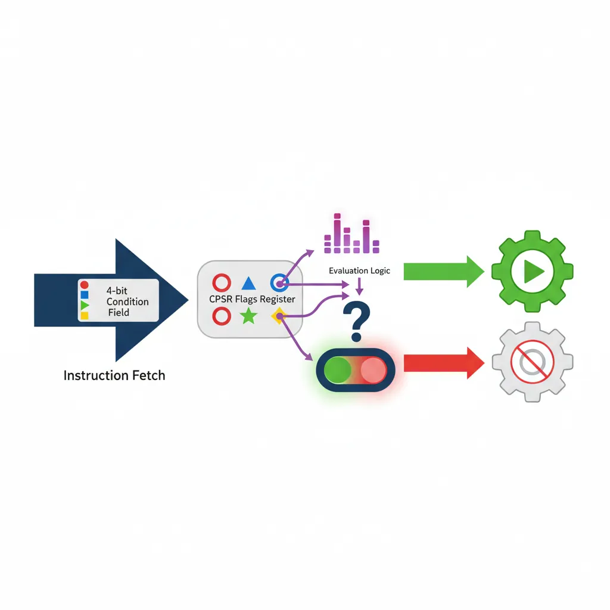

Introduction
ARM Assembly Mastery
Architecture History & Core Concepts
ARMv1→v9, RISC philosophy, profilesARM32 Instruction Set Fundamentals
ARM vs Thumb, registers, CPSR, barrel shifterAArch64 Registers, Addressing & Data Movement
X/W regs, addressing modes, load/store pairsArithmetic, Logic & Bit Manipulation
ADD/SUB, bitfield extract/insert, CLZBranching, Loops & Conditional Execution
Branch types, link register, jump tablesStack, Subroutines & AAPCS
Calling conventions, prologue/epilogueMemory Model, Caches & Barriers
Weak ordering, DMB/DSB/ISB, TLBNEON & Advanced SIMD
Vector ops, intrinsics, media processingSVE & SVE2 Scalable Vector Extensions
Predicate regs, gather/scatter, HPC/MLFloating-Point & VFP Instructions
IEEE-754, scalar FP, rounding modesException Levels, Interrupts & Vector Tables
EL0–EL3, GIC, fault debuggingMMU, Page Tables & Virtual Memory
Stage-1 translation, permissions, huge pagesTrustZone & ARM Security Extensions
Secure monitor, world switching, TF-ACortex-M Assembly & Bare-Metal Embedded
NVIC, SysTick, linker scripts, low-powerCortex-A System Programming & Boot
EL3→EL1 transitions, MMU setup, PSCIApple Silicon & macOS ABI
ARM64e PAC, Mach-O, dyld, perf countersInline Assembly, GCC/Clang & C Interop
Constraints, clobbers, compiler interactionPerformance Profiling & Micro-Optimization
Pipeline hazards, PMU, benchmarkingReverse Engineering & ARM Binary Analysis
ELF, disassembly, CFR, iOS/Android quirksBuilding a Bare-Metal OS Kernel
Bootloader, UART, scheduler, context switchARM Microarchitecture Deep Dive
OOO pipelines, reorder buffers, branch predictVirtualization Extensions
EL2 hypervisor, stage-2 translation, KVMDebugging & Tooling Ecosystem
GDB, OpenOCD/JTAG, ETM/ITM, QEMULinkers, Loaders & Binary Format Internals
ELF deep dive, relocations, PIC, crt0Cross-Compilation & Build Systems
GCC/Clang toolchains, CMake, firmware genARM in Real Systems
Android, FreeRTOS/Zephyr, U-Boot, TF-ASecurity Research & Exploitation
ASLR, PAC attacks, ROP/JOP, kernel exploitEmerging ARMv9 & Future Directions
MTE, SME, confidential compute, AI accelARM32 Overview
ARM32, formally known as AArch32, is the 32-bit instruction set architecture that dominated ARM computing from 1985 until the AArch64 transition began in 2013. Even today, billions of embedded devices, IoT sensors, and legacy systems run ARM32 code. Every Cortex-M microcontroller (the most widely shipped ARM core family) runs exclusively in AArch32's Thumb-2 mode.
Understanding ARM32 is essential for several reasons:
- Embedded dominance: All Cortex-M firmware (STM32, nRF52, RP2040) uses Thumb-2, a subset of AArch32
- Legacy codebases: Millions of lines of 32-bit ARM code exist in production — Android NDK libraries, game engines, signal processing
- AArch64 foundation: Many AArch64 concepts (condition flags, load/store architecture, barrel shifting) originated in ARM32
- Reverse engineering: Security analysis of IoT firmware requires ARM32/Thumb disassembly skills
Instruction Width & Encoding
ARM32 has a unique characteristic among ISAs: multiple instruction encodings for the same architecture. The CPU can switch between them at runtime, and a single binary can mix both:
| Encoding | Width | Code Density | Features | Typical Use |
|---|---|---|---|---|
| ARM | Fixed 32-bit | Lower (~1.4× Thumb) | Full: conditional execution, barrel shifter on every op | Performance-critical inner loops |
| Thumb | Fixed 16-bit | Highest | Limited: R0–R7 only, no conditionals, no barrel shift | Legacy compact code |
| Thumb-2 | Mixed 16/32-bit | High (~70% of ARM) | Near-full: conditionals via IT, barrel shifter, wide registers | Modern embedded (Cortex-M default) |
ARM vs Thumb Modes
The dual-mode nature of ARM32 is one of its most distinctive features. Think of it like a bilingual speaker who switches languages depending on the audience — ARM mode is the verbose, expressive language, while Thumb is the concise, compact one.

ARM Mode (32-bit)
In ARM mode, every instruction is exactly 32 bits (4 bytes) wide. This fixed width provides several advantages:
- Full conditional execution: Every instruction has a 4-bit condition field, allowing any instruction to be predicated (executed only if flags match)
- Full register access: All 16 registers (R0–R15) available in every instruction
- Inline barrel shifter: The second operand of data processing instructions can be shifted/rotated at zero additional cost
- Uniform decoding: Fixed width makes hardware decode simpler and enables constant-time fetch
The trade-off is code size: ARM mode code is typically 30–40% larger than equivalent Thumb code, consuming more instruction cache and flash memory.
@ ARM mode example: Absolute value in 2 instructions (no branch!)
CMP R0, #0 @ Compare R0 with zero
RSBLT R0, R0, #0 @ If R0 < 0: R0 = 0 - R0 (negate)
@ This conditional execution is unique to ARM modeThumb Mode (16-bit)
Thumb mode encodes instructions in 16 bits (2 bytes), roughly halving code size compared to ARM mode. This was critical when ARM7TDMI-era devices had only 32–256 KB of flash memory.
Thumb restrictions versus ARM mode:
- Limited registers: Most instructions can only access R0–R7 (the "low registers"); R8–R15 available only through MOV, ADD, CMP
- No conditional execution: Only branch instructions can be conditional
- No barrel shifter inline: Shift operations require separate instructions
- 2-operand format: Most ALU instructions use
Rd = Rd op Rmformat (destination must be a source)
The SMS vs Email Analogy
Think of ARM mode like email — you can write detailed messages with formatting, attachments, and CC lists. Thumb mode is like SMS from the 2000s — you have 160 characters, so you abbreviate everything. The message gets through, but you sacrifice expressiveness for brevity. Thumb-2 is like modern messaging with both short texts and longer rich messages.
Thumb-2 Mode (Mixed)
Introduced with ARMv6T2 and perfected in ARMv7, Thumb-2 is the best of both worlds. It extends Thumb with 32-bit wide instructions while keeping the 16-bit encodings for common operations. The CPU identifies wide instructions by their first halfword's bit pattern.
Thumb-2 advantages:
- Near-ARM expressiveness: Full register access, barrel shifter, IT blocks for conditional execution
- Thumb-class density: Code size is roughly 26% smaller than ARM mode
- Cortex-M exclusive: Cortex-M processors only support Thumb/Thumb-2 (no ARM mode at all)
- Performance parity: On cores with 32-bit bus, Thumb-2 matches ARM mode performance
@ Thumb-2 wide instruction example (32-bit encoding in Thumb state)
MOVW R0, #0x1234 @ 32-bit Thumb-2: load lower 16 bits
MOVT R0, #0x5678 @ 32-bit Thumb-2: load upper 16 bits
@ R0 now contains 0x56781234
@ Thumb-2 narrow instructions (16-bit encoding, same behavior)
MOVS R0, #42 @ 16-bit Thumb: move immediate to low register
ADDS R1, R0, R2 @ 16-bit Thumb: 3-register addInterworking & BX/BLX
ARM processors can switch between ARM and Thumb states at runtime using interworking instructions. The mechanism is elegant: the least significant bit (LSB) of the target address controls the mode:
- LSB = 0: Target is ARM mode code (address must be 4-byte aligned)
- LSB = 1: Target is Thumb mode code (the bit is stripped; code is 2-byte aligned)
@ Interworking examples
.arm @ Currently in ARM mode
LDR R0, =thumb_func @ Load address of Thumb function (+1 in LSB)
BX R0 @ Branch and eXchange: switch to Thumb mode
.thumb @ Now in Thumb mode
thumb_func:
MOVS R0, #1
BX LR @ Return; LR's LSB determines caller's mode
@ Branch-Link-Exchange: call + mode switch in one instruction
BLX arm_function @ Call ARM function from Thumb (sets LR, clears T)0x8000, the pointer must be 0x8001. The linker handles this automatically for direct calls, but when manually constructing function pointers (e.g., in jump tables), forgetting the LSB is a classic bug that causes a processor fault.
@ ARM mode: switch to Thumb and call a function
BX r0 @ Jump to address in r0; T-bit set by r0[0]
BLX r1 @ Branch-with-link-and-exchange: call + mode switch
@ Check current mode (1 = Thumb, 0 = ARM) via CPSR T bit
MRS r0, CPSR
TST r0, #0x20 @ T bit is bit 5 of CPSR
BNE thumb_modeRegister File & CPSR
The ARM32 register file is the programmer's primary workspace. Understanding every register's role and constraints is essential for writing correct assembly code.

General-Purpose Registers (R0–R15)
ARM32 provides 16 general-purpose 32-bit registers, labeled R0 through R15. While all can hold data, several have architectural or conventional roles:
| Register | AAPCS Name | Role | Preserved? |
|---|---|---|---|
| R0–R3 | a1–a4 | Arguments / return values / scratch | No (caller-saved) |
| R4–R11 | v1–v8 | Local variables | Yes (callee-saved) |
| R12 | IP | Intra-procedure scratch (linker veneer) | No |
| R13 | SP | Stack Pointer | Yes (must be restored) |
| R14 | LR | Link Register (return address) | No (overwritten by BL) |
| R15 | PC | Program Counter | N/A (architectural) |
Special Registers (SP, LR, PC)
Three registers have special architectural behavior that every ARM programmer must understand:
R13 / SP (Stack Pointer): Points to the current top of the stack. The ARM architecture defines SP as growing downward (toward lower addresses). Each processor mode has its own banked SP, allowing interrupt handlers to use their own stack without corrupting the user stack.
R14 / LR (Link Register): When a BL (Branch with Link) instruction executes, the return address is saved into LR. Functions return by branching to LR: BX LR or loading LR into PC: MOV PC, LR. If a function calls another function, it must save LR first (typically via PUSH {LR}).
R15 / PC (Program Counter): Reading PC returns the address of the current instruction plus 8 bytes in ARM mode (plus 4 in Thumb) due to the pipeline. This offset is a frequent source of confusion:
@ PC-relative addressing — the +8 offset matters!
.arm
MOV R0, PC @ R0 = address of this instruction + 8
@ If this instruction is at 0x1000, R0 = 0x1008
@ Common PC-relative pattern: load from literal pool
LDR R0, [PC, #offset] @ Loads from (PC+8+offset)
@ The assembler calculates 'offset' accounting for +8CPSR & SPSR Flags
The Current Program Status Register (CPSR) is a 32-bit register that controls processor state and records the result of operations. It has four groups of fields:
CPSR Bit Layout Reference
Bit: 31 30 29 28 27 26:25 24 23:20 19:16 15:10 9 8 7 6 5 4:0
N Z C V Q IT[1:0] J [RAZ] GE IT E A I F T Mode
Condition Flags (31:28):
N = Negative (result bit 31) Z = Zero (result == 0)
C = Carry (unsigned overflow) V = oVerflow (signed overflow)
Control Bits:
T = Thumb state (1=Thumb, 0=ARM)
I = IRQ disable F = FIQ disable A = Async abort disable
E = Endianness (0=LE, 1=BE)
Mode Bits (4:0):
10000 = User 10001 = FIQ 10010 = IRQ
10011 = SVC 10111 = Abort 11011 = Undef 11111 = SystemThe SPSR (Saved Program Status Register) automatically saves the CPSR when an exception occurs, allowing the exception handler to restore the original state when returning.
@ Reading and modifying CPSR
MRS R0, CPSR @ Read CPSR into R0
BIC R0, R0, #0x80 @ Clear IRQ disable bit (enable IRQ)
MSR CPSR_c, R0 @ Write back only control field bits
@ Check condition flags after CMP
CMP R0, R1 @ Sets N, Z, C, V based on R0 - R1
MRS R2, CPSR @ R2 now contains the flag state
AND R2, R2, #0xF0000000 @ Isolate NZCV bitsBanked Registers & Modes
ARM32 has 7 processor modes, and several registers are banked — meaning each mode has its own physical copy. When the processor switches modes (e.g., on an interrupt), the banked registers instantly contain mode-specific values without needing to save/restore:
| Mode | CPSR Mode Bits | Banked Registers | When Entered |
|---|---|---|---|
| User | 10000 | None (base set) | Normal application code |
| FIQ | 10001 | R8–R12, SP, LR, SPSR | Fast interrupt |
| IRQ | 10010 | SP, LR, SPSR | Normal interrupt |
| SVC | 10011 | SP, LR, SPSR | SWI / SVC instruction |
| Abort | 10111 | SP, LR, SPSR | Memory fault |
| Undefined | 11011 | SP, LR, SPSR | Undefined instruction |
| System | 11111 | Same as User | Privileged User-mode registers |
Data Processing Instructions
ARM32's data processing instructions all share a common 32-bit encoding format. They operate exclusively on registers (load/store architecture), and the second operand can be a register, shifted register, or rotated immediate.

Arithmetic: ADD, SUB, RSB, ADC
ARM provides a complete set of arithmetic operations. Note the distinction between forward and reverse operations, and how the carry flag enables multi-word arithmetic:
@ Basic arithmetic
ADD R0, R1, R2 @ R0 = R1 + R2
ADD R0, R1, #100 @ R0 = R1 + 100
SUB R0, R1, R2 @ R0 = R1 - R2
RSB R0, R1, #0 @ R0 = 0 - R1 (negate: Reverse Subtract)
RSB R0, R1, R2 @ R0 = R2 - R1 (useful when R2 is complex)
@ Multi-word (64-bit) addition: [R1:R0] = [R3:R2] + [R5:R4]
ADDS R0, R2, R4 @ Low 32 bits; S sets Carry flag
ADC R1, R3, R5 @ High 32 bits + Carry from low add
@ Multiply instructions
MUL R0, R1, R2 @ R0 = R1 * R2 (bottom 32 bits)
MLA R0, R1, R2, R3 @ R0 = (R1 * R2) + R3 (multiply-accumulate)
UMULL R0, R1, R2, R3 @ [R1:R0] = R2 * R3 (unsigned 64-bit result)
SMULL R0, R1, R2, R3 @ [R1:R0] = R2 * R3 (signed 64-bit result)SUB Rd, Rn, Op2, the immediate/shifted value is always Op2 (the second operand). If you want Rd = immediate - Rn, you can't just swap operands because Op2 is fixed on the right. RSB (Reverse Subtract) solves this: RSB R0, R1, #100 computes R0 = 100 - R1.
@ Arithmetic examples
ADD r0, r1, r2 @ r0 = r1 + r2
ADDS r0, r1, r2 @ r0 = r1 + r2 ; update CPSR flags
SUB r0, r1, #10 @ r0 = r1 - 10
RSB r0, r1, #0 @ r0 = 0 - r1 (negate)
ADC r2, r2, r3 @ r2 = r2 + r3 + Carry (64-bit add high word)Logical: AND, ORR, EOR, BIC
Bitwise logical operations are the foundation of low-level programming — essential for hardware register manipulation, bit masking, and flag management:
@ Bitwise logical operations
AND R0, R1, #0xFF @ R0 = R1 & 0xFF (mask lower byte)
ORR R0, R1, #0x80 @ R0 = R1 | 0x80 (set bit 7)
EOR R0, R1, R2 @ R0 = R1 ^ R2 (XOR / toggle bits)
BIC R0, R1, #0x03 @ R0 = R1 & ~0x03 (clear bits 0-1)
@ Common patterns
EOR R0, R0, R0 @ R0 = 0 (clear register)
ORR R0, R0, #(1<<5) @ Set bit 5 (set T bit in CPSR)
BIC R0, R0, #(1<<7) @ Clear bit 7 (enable IRQ in CPSR)
EOR R0, R1, R2 @ Toggle: flip bits in R1 where R2 has 1sBit Manipulation in Hardware Drivers
When configuring a UART peripheral on an STM32 microcontroller, you frequently use these patterns:
@ Enable UART1 clock in RCC register (typical Cortex-M pattern)
LDR R0, =0x40021018 @ RCC_APB2ENR address
LDR R1, [R0] @ Read current value
ORR R1, R1, #(1<<14) @ Set USART1EN bit (bit 14)
STR R1, [R0] @ Write back — UART1 clock now enabled
@ Configure baud rate: clear bits [3:0], then set new value
LDR R0, =0x40011008 @ USART1_BRR address
LDR R1, [R0]
BIC R1, R1, #0x0F @ Clear mantissa fraction bits
ORR R1, R1, #0x09 @ Set new fraction value
STR R1, [R0]Comparison: CMP, CMN, TST, TEQ
Comparison instructions set the CPSR flags without storing a result. They always update flags (no S suffix needed):
| Instruction | Operation | Equivalent To | Use Case |
|---|---|---|---|
CMP Rn, Op2 | Rn − Op2 (flags only) | SUBS but discard result | Compare two values |
CMN Rn, Op2 | Rn + Op2 (flags only) | ADDS but discard result | Compare with negated value |
TST Rn, Op2 | Rn AND Op2 (flags only) | ANDS but discard result | Test if specific bits are set |
TEQ Rn, Op2 | Rn EOR Op2 (flags only) | EORS but discard result | Test equality without affecting C/V |
@ Comparison patterns
CMP R0, #10 @ Set flags for R0 - 10
BEQ equal_case @ Branch if R0 == 10 (Z flag set)
BGT greater_case @ Branch if R0 > 10 (signed)
TST R0, #0x01 @ Test if bit 0 is set (odd number check)
BNE is_odd @ Branch if bit 0 = 1 (Z flag clear)
TEQ R0, R1 @ Test if R0 == R1 without affecting C flag
BEQ are_equalMove: MOV, MVN, MOVW, MOVT
Move instructions copy values into registers. The evolution from MOV to MOVW/MOVT reflects a key ARM32 design challenge: loading arbitrary 32-bit constants.
@ Basic moves
MOV R0, R1 @ R0 = R1
MOV R0, #255 @ R0 = 255 (8-bit immediate, rotated)
MVN R0, #0 @ R0 = ~0 = 0xFFFFFFFF (all bits set)
MVN R0, R1 @ R0 = ~R1 (bitwise NOT)
@ Loading any 32-bit constant (ARMv6T2+ / Thumb-2)
MOVW R0, #0xDEAD @ R0 = 0x0000DEAD (lower 16 bits)
MOVT R0, #0xBEEF @ R0 = 0xBEEFDEAD (upper 16 bits set)
@ Older method: LDR pseudo-instruction (literal pool)
LDR R0, =0xBEEFDEAD @ Assembler places constant in memory
@ and generates: LDR R0, [PC, #offset]@ Loading a 32-bit constant using MOVW + MOVT
MOVW r0, #0xDEAD @ r0 = 0x0000DEAD
MOVT r0, #0xBEEF @ r0 = 0xBEEFDEADThe Barrel Shifter
The barrel shifter is ARM32's secret weapon — a hardware unit that can shift or rotate the second operand of any data processing instruction at zero additional cost. This means an instruction like ADD R0, R1, R2, LSL #3 computes R0 = R1 + (R2 × 8) in a single cycle. No other mainstream architecture offers this flexibility.

The Combo Tool Analogy
Imagine a power tool that combines a drill and a screwdriver. You can drill a hole and drive a screw in the same motion. ARM's barrel shifter is similar — it lets you shift/rotate a value and perform an ALU operation in the same instruction cycle. In x86, you'd need two separate instructions (a shift, then an add).
LSL, LSR, ASR, ROR, RRX
ARM32 supports five shift/rotate types, each specified by a 2-bit type code and either a 5-bit immediate or a register for the shift amount:
| Shift | Name | Operation | C Flag | Common Use |
|---|---|---|---|---|
LSL #n | Logical Shift Left | Shift left, fill with zeros | Last bit shifted out | Multiply by 2n |
LSR #n | Logical Shift Right | Shift right, fill with zeros | Last bit shifted out | Unsigned divide by 2n |
ASR #n | Arithmetic Shift Right | Shift right, replicate sign bit | Last bit shifted out | Signed divide by 2n |
ROR #n | Rotate Right | Bits wrap around from LSB to MSB | Last bit rotated | Bit permutation, crypto |
RRX | Rotate Right eXtended | 33-bit rotate through C flag | Old bit 0 | Multi-word shifts |
Shifter Operands in Instructions
The barrel shifter applies to the second operand (Op2) of every data processing instruction. This creates powerful single-instruction idioms:
@ Barrel shifter examples — all single-cycle instructions
ADD R0, R1, R2, LSL #3 @ R0 = R1 + (R2 * 8) — array indexing
SUB R0, R1, R2, ASR #1 @ R0 = R1 - (R2 / 2) — signed halving
MOV R0, R1, ROR #16 @ R0 = swap halfwords of R1
RSB R0, R1, R1, LSL #4 @ R0 = R1*16 - R1 = R1*15
ADD R0, R1, R1, LSL #2 @ R0 = R1 + R1*4 = R1*5
@ Multiply by 7 using barrel shifter (faster than MUL on early ARM)
RSB R0, R1, R1, LSL #3 @ R0 = R1*8 - R1 = R1*7
@ Shift by register value (one extra cycle on some cores)
AND R0, R0, R1, LSR R2 @ R0 = R0 & (R1 >> R2)Immediate Rotate Encoding
ARM32's immediate encoding is one of its most clever — and confusing — design choices. The 12-bit immediate field encodes a 32-bit constant as:
- An 8-bit value (range 0–255)
- Rotated right by 2 × (4-bit rotation field) (0, 2, 4, ... 30 positions)
12-bit immediate field:
┌────────────┬────────────────────────┐
│ rot (4 bit)│ imm8 (8 bit) │
└────────────┴────────────────────────┘
Value = imm8 ROR (2 × rot)
Examples of encodable constants:
0xFF → imm8=0xFF, rot=0 (no rotation)
0xFF0 → imm8=0xFF, rot=14 (0xFF rotated right by 28)
0x3FC → imm8=0xFF, rot=15 (0xFF rotated right by 30)
0xC000003F → imm8=0xFF, rot=1 (0xFF rotated right by 2)
NOT encodable (requires MOVW+MOVT or literal pool):
0x101 → can't represent as rotated 8-bit value
0xFFFF → exceeds any single rotation
0x1234 → no rotation of 8-bit value yields thisMOVW+MOVT (ARMv6T2+), LDR Rd, =constant (literal pool), or decompose the constant mathematically (e.g., MOV R0, #0x100 + ORR R0, R0, #0x34 for 0x134).
Load/Store Instructions
As a pure load/store architecture, ARM32 uses dedicated instructions for all memory access. The ALU never touches memory directly — you must explicitly load data into registers, process it, then store results back.
LDR, STR, LDRB, STRB
The LDR/STR family handles data transfers of different sizes:
| Instruction | Size | Sign Extension | Description |
|---|---|---|---|
LDR / STR | 32-bit (word) | N/A | Full word load/store |
LDRH / STRH | 16-bit (halfword) | Zero-extended | Unsigned halfword |
LDRSH | 16-bit (halfword) | Sign-extended | Signed halfword to 32-bit register |
LDRB / STRB | 8-bit (byte) | Zero-extended | Unsigned byte |
LDRSB | 8-bit (byte) | Sign-extended | Signed byte to 32-bit register |
LDRD / STRD | 64-bit (double) | N/A | Two registers, 8-byte aligned |
Pre/Post-Index Addressing
ARM32 supports three addressing modes that differ in when the offset modifies the base register:
@ Offset addressing (base + offset, no writeback)
LDR R0, [R1] @ R0 = Mem[R1]
LDR R0, [R1, #16] @ R0 = Mem[R1 + 16]
LDR R0, [R1, R2] @ R0 = Mem[R1 + R2]
LDR R0, [R1, R2, LSL #2] @ R0 = Mem[R1 + R2*4] (array of ints)
@ Pre-indexed addressing (update base BEFORE load)
LDR R0, [R1, #4]! @ R1 = R1 + 4; then R0 = Mem[R1]
@ The ! means "write back to R1"
@ Post-indexed addressing (update base AFTER load)
LDR R0, [R1], #4 @ R0 = Mem[R1]; then R1 = R1 + 4
@ Useful for iterating through arrays: load, then advance pointerLDR R0, [R1], #4 is perfect for array traversal — it loads the current element and advances the pointer in a single instruction. This is equivalent to the C expression *ptr++.
LDM/STM Block Transfers
Load/Store Multiple instructions transfer a set of registers to/from consecutive memory addresses in a single instruction. They have four addressing variants:
| Variant | Name | Stack Equivalent | Description |
|---|---|---|---|
LDMIA / STMIA | Increment After | Pop / Push (FD) | Start at base, increment after each transfer |
LDMIB / STMIB | Increment Before | Pop / Push (ED) | Increment first, then transfer |
LDMDA / STMDA | Decrement After | Pop / Push (FA) | Start at base, decrement after |
LDMDB / STMDB | Decrement Before | Push / Pop (FD) | Decrement first, then transfer |
@ Save multiple registers to stack (descending, pre-decrement)
STMDB SP!, {R0-R3, LR} @ Push R0,R1,R2,R3,LR; SP decremented
@ Restore multiple registers from stack
LDMIA SP!, {R0-R3, PC} @ Pop into R0,R1,R2,R3,PC; return from function
@ Block memory copy using LDM/STM (16 bytes per iteration)
loop:
LDMIA R0!, {R4-R7} @ Load 4 words from source, advance R0
STMIA R1!, {R4-R7} @ Store 4 words to dest, advance R1
SUBS R2, R2, #16 @ Decrement byte count
BGT loop @ Repeat if more dataPUSH/POP
PUSH and POP are syntactic aliases that make stack operations more readable:
@ PUSH and POP are aliases for STMDB/LDMIA with SP!
PUSH {R4-R7, LR} @ Equivalent to: STMDB SP!, {R4-R7, LR}
@ ... function body ...
POP {R4-R7, PC} @ Equivalent to: LDMIA SP!, {R4-R7, PC}
@ Loading LR into PC returns from the function
@ Why POP {..., PC} works for returning:
@ The BL instruction saved the return address in LR.
@ PUSH saved LR to the stack.
@ POP loads that saved value directly into PC → jumps to return address.@ Function prologue/epilogue using PUSH/POP
PUSH {r4-r7, lr} @ Save callee-saved regs + return address
@ ... function body ...
POP {r4-r7, pc} @ Restore regs; load LR into PC to returnConditional Execution
Conditional execution is ARM32's most iconic feature and a key differentiator from x86. In ARM mode, every instruction carries a 4-bit condition code field (bits [31:28]). If the current CPSR flags don't match the condition, the instruction behaves as a NOP — it's skipped but still takes one cycle. This eliminates short branches, which cause pipeline stalls on all processors.

Condition Codes (EQ, NE, GT, etc.)
ARM32 defines 15 condition codes (plus AL = Always, the default):
Condition Code Quick Reference
| Code | Suffix | Meaning | Flags Tested |
|---|---|---|---|
| 0000 | EQ | Equal / Zero | Z=1 |
| 0001 | NE | Not Equal / Non-zero | Z=0 |
| 0010 | CS/HS | Carry Set / Unsigned ≥ | C=1 |
| 0011 | CC/LO | Carry Clear / Unsigned < | C=0 |
| 0100 | MI | Minus / Negative | N=1 |
| 0101 | PL | Plus / Positive or Zero | N=0 |
| 0110 | VS | Overflow Set | V=1 |
| 0111 | VC | Overflow Clear | V=0 |
| 1000 | HI | Unsigned Higher | C=1 & Z=0 |
| 1001 | LS | Unsigned Lower or Same | C=0 | Z=1 |
| 1010 | GE | Signed ≥ | N=V |
| 1011 | LT | Signed < | N≠V |
| 1100 | GT | Signed > | Z=0 & N=V |
| 1101 | LE | Signed ≤ | Z=1 | N≠V |
| 1110 | AL | Always (default) | — |
@ Practical conditional execution patterns
@ 1. Branch-free max(R0, R1) → R0
CMP R0, R1
MOVLT R0, R1 @ If R0 < R1, replace R0 with R1
@ 2. Branch-free clamp to range [0, 255]
CMP R0, #0
MOVLT R0, #0 @ If R0 < 0: R0 = 0
CMP R0, #255
MOVGT R0, #255 @ If R0 > 255: R0 = 255
@ 3. Branch-free GCD (Euclidean algorithm)
gcd:
CMP R0, R1
SUBGT R0, R0, R1 @ If R0 > R1: R0 -= R1
SUBLE R1, R1, R0 @ If R0 <= R1: R1 -= R0
BNE gcd @ Repeat while R0 != R1IT Block in Thumb-2
Since Thumb instructions don't have a condition code field, Thumb-2 introduced the IT (If-Then) instruction. IT creates a block of up to 4 conditionally executed instructions:
@ IT block syntax: IT{x{y{z}}} cond
@ T = Then (same condition), E = Else (opposite condition)
@ Example: max(R0, R1) in Thumb-2
CMP R0, R1
ITE GT @ If-Then-Else: GT
MOVGT R0, R1 @ Then: (skipped if GT — this is wrong pattern)
MOVLE R0, R1 @ Else: actually we want:
@ Correct max pattern:
CMP R0, R1
IT LT @ If Less Than:
MOVLT R0, R1 @ Then: R0 = R1 (R1 was larger)
@ 4-instruction IT block example:
CMP R0, #0
ITTEE GT @ If GT, Then, Else, Else
ADDGT R1, R1, #1 @ Then: increment
ADDGT R2, R2, #1 @ Then: increment
SUBLE R1, R1, #1 @ Else: decrement
SUBLE R2, R2, #1 @ Else: decrementMOVLT R0, R1 and the assembler inserts the required IT LT before it. Explicit IT blocks are mainly needed for hand-written assembly or when analyzing disassembly output.
The S Suffix & Flag Updates
By default, ARM data processing instructions do not update the CPSR condition flags. You must explicitly request flag updates by appending the S suffix:
@ Without S: flags unchanged (can't use condition codes after)
ADD R0, R1, R2 @ R0 = R1 + R2; NZCV flags untouched
@ With S: flags updated (enables conditional execution)
ADDS R0, R1, R2 @ R0 = R1 + R2; N,Z,C,V flags set
@ Comparison always updates flags (S is implicit)
CMP R0, R1 @ Always sets flags (no S needed)
TST R0, #0xFF @ Always sets flags
@ Pattern: loop counter with flag-setting subtraction
SUBS R2, R2, #1 @ Decrement and set Z flag when R2 reaches 0
BNE loop @ Branch back if not zeroExercises & Practice
Barrel Shifter Multiplication
Write ARM32 instructions using only ADD, SUB, RSB, and barrel shifter (no MUL) to compute:
R0 = R1 × 10R0 = R1 × 17R0 = R1 × 100(hint: 100 = 4 × 25 = 4 × (32 - 8 + 1))
Conditional Execution Challenge
Convert this C function to ARM32 assembly using no branches (only conditional execution):
int sign(int x) {
if (x > 0) return 1;
if (x < 0) return -1;
return 0;
}Hint: Use CMP, then MOVGT/MOVLT/MOVEQ.
Immediate Encoding Puzzle
For each constant, determine if it's encodable as an ARM32 immediate (8-bit value rotated right by even amount). If not, show how to load it with MOVW+MOVT:
0x3FC0x1020xAB000xF000000F
Conclusion & Next Steps
In this deep dive into ARM32, you've mastered the fundamental building blocks of the 32-bit instruction set:
- ARM vs Thumb modes: The trade-off between full-featured 32-bit ARM and compact 16-bit Thumb, unified by Thumb-2
- Register file: 16 general-purpose registers with special roles for SP, LR, and PC, plus the critical CPSR flags register
- Banked registers: How ARM32's 7 processor modes each maintain their own SP, LR, and SPSR for efficient context switching
- Data processing: Arithmetic, logical, comparison, and move instructions with the powerful inline barrel shifter
- Immediate encoding: The clever but tricky 8-bit rotated immediate scheme and its constraints
- Load/store: Flexible addressing modes including pre/post-indexing and block transfers
- Conditional execution: ARM32's signature feature — predicated instruction execution that eliminates short branches
These ARM32 concepts form the historical foundation upon which AArch64 was built. In the next part, we'll transition to the modern 64-bit world and explore how AArch64 reimagined the register file, addressing modes, and instruction encoding for the next era of ARM computing.